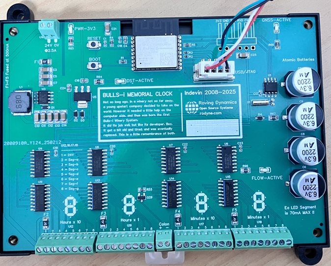

As I sit at my desk in the clients winery, “working” vintage support, (a job where I mostly feel like Dumbo’s feather, ie a prop that gives the company confidence everything will be great, where as in reality I do very little. The client knows my feelings on this but are quite happy to pay for those just in case moments that might prove costly). Anyway, I thought, I need something big, which these guys can remember me by when I’m gone, and looking around the winery building I wondered what I could possibly contribute that would be both useful and memorable, and I thought a clock!
So I thought I would design and build a clock, one which will reliably keep the time and be pretty well maintenance free for its hopefully long and boring life. But why would anybody need to design a clock today, surely every variation has been tried? Well, for one thing, this clock is going to be pretty big. Although it is only a seven-segment display, with two digits for hours and two for minutes, each segment is going to be a wine bottle. So 7 bottles are required per digit, in total 28 bottles.
Inside each bottle will be an LED strip or similar so we can light the segment, therefore we need a circuit board that can drive 28 LED strips, also, to make the flashing colons that separate the hours and minutes, the ends of two bottles will be used, and so another output is required to drive the LED’s in those. That’s 29 drivers, 29 bottles, 2M x 1M in size minimum, and as a total package with some form of mounting, quite heavy I guess!
The boring electronics prototype

The electronics for this were always going to be easy. Again it’s a project I would normally slap in an old PIC microcontroller and an RTC and have it designed in a few hours. But that was the old 1990’s Boz, the new 2025 Boz is on a mission to try out some of the new technologies out there, and the modern micro-controller for today will be (rolls-the-dice..) the ESP32-C3. Specifically the ESP32-C3-WROOM-02 a RISC-V 32-bit processor with Wi-Fi, Bluetooth, 400KB of RAM and 2MB of Flash all for $3.30. (A bit over-kill for a clock, but welcome to 2025!)
So a brand-new processor I have never used before, or even seen before a few days ago should be exciting, or at least a bit risky? Maybe, maybe-not. Lets go on a journey together. For this journey, the AI of choice will be Googles Gemini 2.0, a competent, if pretty boring and sensible AI, so while Grok 3 may be considered your rebellious genius teenager, Gemini 2.0 is probably your quiet old uncle, the retired school teacher who lives in his shed and doesn’t really talk to many people, but also tends to be sensible.
The Schematic.

Yes, pretty boring and certainly not rocket science. An RTC, a serial input for a GPS (Not yet sure if I can get a signal where it is going to be located, but a good time-source never-the-less), and 29 open-collector outputs that can drive a few hundred milliamps at up to 24V, total BOM cost around $8 from LCSC
Firstly, it is obvious that a lot of the big AI models have a good understanding of electronics, and simple questions, like how much power will this or that draw? or what are the maximum and minimum supply voltages for power and IO? are generally answered correctly. However, that accuracy is about 90% at best and 10% of answers will be confidently answered wrongly, with a quick and humble apology when the mistake is finally pointed out. Again the ability to feed a schematic into a AI would be fantastic, but we are not there yet. (or if we are I haven’t seen it!)
Asking questions like, what capacitance would I require on VCC1 to keep the RTC running for 8-hours in the configuration shown was answered quite well with suitable workings out shown and the real-life circuit performing slightly better than the calculation
There are a few grey areas out there which may lead to said AI’s not being too accurate, for example, if I decided to use the USB interface that the ESP32-C3 has for program/debug, would I still require the boot button to program it? The reference design does show almost every possible IO pin used for programming and makes you wonder if there would be any left afterwards. People building these boards on the internet tend to favour the serial port and use of the DTR and RTS of a serial to USB driver to program it, well I’m telling you now, two wires to a USB connector are all you need and you do not need to press the boot or reset switches ever. Also as I used my usual GPIO expansion technique for slowly changing output ports by using a series of shift registers so that was never an issue..
Programming.
This is where it got interesting. After bigging up the project to Gemini (it felt right to do so!), I told it I was using the Arduino IDE (as the VSCode extension for the ESP32 was, to say it politely, work in progress!), I got it all excited to help me. I then fed the following prompt into him/her/it..
The ESP32-C3 is on a ESP32-C3-WROOM-02 board
The connections from the ESP32-C3 to the DS1302 are:
I/O (Pin 6 of DS1302) to GPIO 0
CE (Pin 5 of DS1302) to GPIO 1
SCLK (Pin 7 of DS1302) to GPIO 3
The clock will output its time in the format HH:MM to a seven-segment display. It does this by sending 32 bytes of (7 segment) data out to four 74HC595 shift registers in series, the first shift register is hours x 10, the second shift register is hours x 1, the third shift register is minutes x 10, the last shift register is minutes x 1, The connections from the ESP32-C3 to the shift registers are as follows:
74HC595 pin 14 (DS) of first shift register to GPIO 6
74HC595 pin 12 (STCP) of all shift registers to GPIO 7
74HC595 pin 11 (SHCP) of all shift registers to GPIO 5
The 7-segments are connected to each 74HC595 as follows
Q0 = segment a
Q1 = segment b
Q2 = segment c
Q4 = segment d
Q5 = segment e
Q6 = segment f
Q7 = segment g
I want to be able to connect to the ESP32 Wi-Fi and set the time on the DS1302 through a web page, then update the LED outputs of to the shift register every time it changes
I would like to understand the code I am writing by not using any libraries where possible e.g. the DS1302 communication should be easy without libraries, though the Wi-Fi stuff might be a bit hard for me to understand.
Is this enough to go on?
I literally downloaded the Arduino IDE, downloaded the ESP32 extension for it, copied the code it generated from the above prompt in and bugger me if it didn’t just work!
Well, almost! It did kind of work, the clock counted and showed the time, the web-page worked and set the time, but of course the devil is always in the detail, the web-page was bloated and overkill and pretty ugly, it also only set the time, not the day and date, which I would require latter for daylight-savings calculations. Also as I lay there thinking about it, I thought, why would I want to type in the time from a web-page when I had a phone that already had the correct date and time down to the microsecond? I quickly corrected my prompt, asked it to separate out the networking part, into another module, change the Wi-Fi client into a Wi-Fi access point, made the web page into a simple button and bit of java-script to send the time/date, and manually tidied up the landing page a bit (All using AI prompts of course as I am really totally shit at this web stuff!)
As a side rant, lets talk again about that bloat! 400KB Ram and 2MB ROM and 75% used. I wont even try to understand the reasoning behind the colossal use of resources, lets just say we are in 2025 and the future seems to be bloat! Seriously, nobody these days seems to give a rats-arse about throwing in libraries that go into thousands of lines of code they have no idea what any of it does. Sure it makes my life easier, but extrapolating the extra computation and resources required by computers these days the waste of power must be several power stations! Anyway, rant over, back to the project..
The Arduino IDE itself is pretty bullet-proof; as I remember it from about 10 years earlier simply selecting the ESP32C3 dev module as my board, and setting the “USB CDC on Boot” to get debug information was all that was required, all refreshingly easy.
OK, so by now you have noticed the lack of pictures of the actual epic bottle-hardware! well, this is only the first part of the post as I still have to mount those 28.5 wine bottles (the point five being the two bottle-ends for the colon) on a very large mount, shove the LED’s in them, and get a 24V power supply as everything so far has been with USB power and logic probes. A few friends have offered to help in this part as my artistic flair is about as shitty as my web skills!
The code to the working board so far is below. It may change but as it stands it works as a stand-alone clock (just add big LED’s!)..
To be continued..
IndevinClock.ino
// Colabaration between Boz and various AI's that provides the logic to
// manage the DS1302 real-time clock and update the display through the
// shift register GPIO expander. And provide a web portal to set the time.
// Full Hardware design is/will be at rodyne.com
// All Designs relating to this project are Public Domain.
#include <Arduino.h>
#include "networking.h"
// Pin Definitions
#define DS1302_CE_PIN 1 // Chip Enable
#define DS1302_IO_PIN 0 // Data I/O
#define DS1302_SCLK_PIN 3 // Serial Clock
#define SHCP_PIN 5 // 74HC595 Shift Register Clock (SHCP)
#define DS_PIN 6 // 74HC595 Data Input (DS)
#define STCP_PIN 7 // 74HC595 Storage Register Clock (STCP)
#define COLON_PIN 10 // flashing colon output
#define DSTLED_PIN 4 // debug led
const char * DayOfWeek[] = { "ERR!","Mon","Tue","Wed","Thu","Fri","Sat","Sun" };
const uint8_t Lookup7seg[] = { 0b00111111, 0b00000110, 0b01011011, 0b01001111, 0b01100110, 0b01101101, 0b01111101, 0b00000111, 0b01111111, 0b01101111 };
uint8_t RTCsec, RTCmin, RTChour, RTCday, RTCmonth, RTCyear, RTCdow, Colon; // global variables visible to networking module
uint8_t LastUpdate, LastMinVal; // local to this unit
// Function Prototypes
void ds1302_write(uint8_t address, uint8_t data);
uint8_t ds1302_read(uint8_t address);
void ds1302_setTime(uint8_t sec, uint8_t min, uint8_t hour, uint8_t day, uint8_t month, uint8_t year, uint8_t dow);
void ds1302_getTime();
uint8_t bcdToDec(uint8_t val);
uint8_t decToBcd(uint8_t val);
void displayTime();
bool isDaylightSavings();
bool isDaylightSavings()
{
// New Zealand Daylight Saving Time (DST) rules: Starts: 2:00 a.m. on the last Sunday in September. Ends: 3:00 a.m. on the first Sunday in April.
if (RTCmonth < 4 || RTCmonth > 9)
{
return (RTCmonth > 9); // DST is active from October to March
}
else if (RTCmonth == 4)
{
// Check if it's the first Sunday in April
int firstSunday = 8 - RTCdow; // Calculate the date of the first Sunday
if (RTCday < firstSunday)
{
return true; // DST is still active before the first Sunday
}
else if (RTCday == firstSunday)
{
return (RTChour < 3); // DST ends at 3:00 a.m.
}
else
{
return false; // DST is not active after the first Sunday
}
}
else if (RTCmonth == 9)
{
// Check if it's the last Sunday in September
int lastSunday = 30 - ((RTCdow + (30 - RTCday)) % 7); // Calculate the date of the last Sunday
if (RTCday > lastSunday)
{
return true; // DST is active after the last Sunday
}
else if (RTCday == lastSunday)
{
return (RTChour >= 2); // DST starts at 2:00 a.m.
}
else
{
return false; // DST is not active before the last Sunday
}
}
return false; // Should not reach here
}
void displayTime()
{
uint32_t displayData = 0;
uint8_t rawHour = RTChour;
if(isDaylightSavings()) // convert hrs to DST for display
{
if(rawHour==0)
rawHour=23;
else
rawHour--;
}
Serial.print(DayOfWeek[RTCdow]); Serial.print(" ");
Serial.print(rawHour); Serial.print(":");
Serial.print(RTCmin); Serial.print(" ");
Serial.print(RTCday); Serial.print("/");
Serial.print(RTCmonth); Serial.print("/");
Serial.print(RTCyear);
if(isDaylightSavings()) // convert hrs to DST for display
Serial.println(" (Daylight Savings Active)");
else
Serial.println("");
uint8_t hoursTens = rawHour / 10;
uint8_t hoursOnes = rawHour % 10;
uint8_t minutesTens = RTCmin / 10;
uint8_t minutesOnes = RTCmin % 10;
// Combine digit data into a 32-bit value
displayData |= (uint32_t)Lookup7seg[minutesOnes];
displayData <<= 8;
displayData |= (uint32_t)Lookup7seg[minutesTens];
displayData <<= 8;
displayData |= (uint32_t)Lookup7seg[hoursOnes];
displayData <<= 8;
displayData |= (uint32_t)Lookup7seg[hoursTens];
// clock out data to shift registers
for (int i = 31; i >= 0; i--)
{
digitalWrite(DS_PIN, (displayData >> i) & 1);
digitalWrite(SHCP_PIN, HIGH);
digitalWrite(SHCP_PIN, LOW);
delay(1);
}
// Latch data to outputs
digitalWrite(STCP_PIN, HIGH);
digitalWrite(STCP_PIN, LOW);
}
void ds1302_write(uint8_t address, uint8_t data)
{
digitalWrite(DS1302_CE_PIN, HIGH);
shiftOut(DS1302_IO_PIN, DS1302_SCLK_PIN, LSBFIRST, address);
shiftOut(DS1302_IO_PIN, DS1302_SCLK_PIN, LSBFIRST, data);
digitalWrite(DS1302_CE_PIN, LOW);
}
uint8_t bcdToDec(uint8_t val)
{
return (val / 16 * 10) + (val % 16);
}
uint8_t decToBcd(uint8_t val)
{
return (val / 10 * 16) + (val % 10);
}
uint8_t ds1302_read(uint8_t address)
{
uint8_t data;
digitalWrite(DS1302_CE_PIN, HIGH);
shiftOut(DS1302_IO_PIN, DS1302_SCLK_PIN, LSBFIRST, address);
pinMode(DS1302_IO_PIN, INPUT);
data = shiftIn(DS1302_IO_PIN, DS1302_SCLK_PIN, LSBFIRST);
pinMode(DS1302_IO_PIN, OUTPUT);
digitalWrite(DS1302_CE_PIN, LOW);
return data;
}
void ds1302_getTime()
{
ds1302_write(0x8F, 0x00); // Dummy write to DS1302 to prepare for read
RTCsec = bcdToDec(ds1302_read(0x81) & 0x7F);
RTCmin = bcdToDec(ds1302_read(0x83));
RTChour = bcdToDec(ds1302_read(0x85));
RTCday = bcdToDec(ds1302_read(0x87));
RTCmonth = bcdToDec(ds1302_read(0x89));
RTCdow = bcdToDec(ds1302_read(0x8b));
RTCyear = bcdToDec(ds1302_read(0x8D));
}
void ds1302_setTime(uint8_t sec, uint8_t min, uint8_t hour, uint8_t day, uint8_t month, uint8_t year, uint8_t dow)
{
// no checks on data written!
ds1302_write(0x8E, 0x00); // Disable DS1302 write protect
ds1302_write(0x80, decToBcd(sec)); // 0..59
ds1302_write(0x82, decToBcd(min)); // 0..59
ds1302_write(0x84, decToBcd(hour)); // 0..23
ds1302_write(0x86, decToBcd(day)); // 1..31
ds1302_write(0x88, decToBcd(month)); // 1..12
ds1302_write(0x8A, decToBcd(dow)); // 1..7
ds1302_write(0x8C, decToBcd(year)); // 0..99
ds1302_write(0x8E, 0x80); // Re-enable DS1302 write protect
ds1302_getTime();
Serial.print(" Set Time ");
Serial.print(RTChour); Serial.print(":");
Serial.print(RTCmin); Serial.print(":");
Serial.print(RTCsec); Serial.print(" - ");
Serial.print(DayOfWeek[RTCdow]); Serial.print(" ");
Serial.print(RTCday); Serial.print("/");
Serial.print(RTCmonth); Serial.print("/20");
Serial.print(RTCyear);
if(isDaylightSavings()) // convert hrs to DST for display
Serial.println(" (Daylight Savings Time is Active)");
else
Serial.println("");
}
void setup()
{
Serial.begin(115200); // Remember to set IDE "USB CDC ON BOOT" to ENABLED or serial WONT work!
// INIT DS1302
pinMode(DS1302_CE_PIN, OUTPUT);
pinMode(DS1302_IO_PIN, OUTPUT);
pinMode(DS1302_SCLK_PIN, OUTPUT);
digitalWrite(DS1302_CE_PIN, HIGH);
digitalWrite(DS1302_SCLK_PIN, LOW);
// check clock is running and if not set it running and with a default time/date
ds1302_write(0x8F, 0x00); // Dummy write to prepare for read
uint8_t RTCDisabled = ds1302_read(0x81) & 0x80;
if(RTCDisabled)
{
// default time
ds1302_setTime(0, 0, 8, 1, 4, 25, 2);
}
// INIT shift reg
pinMode(SHCP_PIN, OUTPUT);
pinMode(DS_PIN, OUTPUT);
pinMode(STCP_PIN, OUTPUT);
pinMode(COLON_PIN, OUTPUT);
pinMode(DSTLED_PIN, OUTPUT);
digitalWrite(SHCP_PIN, LOW);
digitalWrite(STCP_PIN, LOW);
// init WiFi
initWiFi();
}
void loop()
{
ds1302_getTime();
if(++LastUpdate>10 || LastMinVal!=RTCmin ) // Update time every 10 seconds or if minutes change (so we can see flow-active LED flash)
{
LastUpdate=0;
LastMinVal=RTCmin;
displayTime();
}
// flash colon at 1 sec
if (Colon==0) Colon=1; else Colon=0;
digitalWrite(COLON_PIN, Colon);
digitalWrite(DSTLED_PIN, Colon);
server.handleClient(); // Handle any web client requests
delay(1000);
}networking.h
// Colabaration between Boz and various AI's that provides the functionality to
// connect to and set the clock using a wifi connection and web browser
// All Designs relating to this project are Public Domain.
#ifndef NETWORKING_H
#define NETWORKING_H
#include <WiFi.h>
#include <WebServer.h>
// Access Point settings
extern const char* ap_ssid;
extern const char* ap_password;
extern IPAddress local_ip;
extern IPAddress gateway;
extern IPAddress subnet;
extern uint8_t RTCsec, RTCmin, RTChour, RTCday, RTCmonth, RTCyear, RTCdow; // global variables
extern void ds1302_setTime(uint8_t sec, uint8_t min, uint8_t hour, uint8_t day, uint8_t month, uint8_t year, uint8_t dow);
extern void displayTime();
extern bool isDaylightSavings();
extern WebServer server;
// Function declarations
void initWiFi();
void handleRoot();
void handleSetTime();
void handleNotFound();
#endifnetworking.cpp
// Colabaration between Boz and various AI's that provides the functionality to
// connect to and set the clock using a wifi connection and web browser
// All Designs relating to this project are Public Domain.
#include "networking.h"
#include <Arduino.h>
// Access Point settings
const char* ap_ssid = "Bullsi-Clock";
const char* ap_password = "boz"; // actual password not required but add one here if req
IPAddress local_ip(192, 168, 4, 1);
IPAddress gateway(192, 168, 4, 1);
IPAddress subnet(255, 255, 255, 0);
// Create web server on port 80
WebServer server(80);
void handleRoot() // handler for landing page
{
String html = "<!DOCTYPE html><html><head>";
html += "<meta name='viewport' content='width=device-width, initial-scale=1'>";
html += "<style>";
html += "body { font-family: Arial, sans-serif; text-align: center; margin: 20px; }";
html += "h1 { color: #0066cc; font-size: 2em;}"; // Larger heading
html += ".clock { font-size: 3em; margin: 20px 0; }"; // Larger clock
html += "button {";
html += " background-color: #4CAF50;";
html += " color: white;";
html += " padding: 15px 30px;"; // Larger button
html += " border: none;";
html += " cursor: pointer;";
html += " font-size: 1.2em;"; // Larger font
html += "}";
html += "</style>";
html += "<script>";
html += "function sendCurrentTime() {";
html += " const now = new Date();";
html += " const hours = now.getHours();";
html += " const minutes = now.getMinutes();";
html += " const seconds = now.getSeconds();";
html += " const year = now.getFullYear();";
html += " const month = now.getMonth() + 1;";
html += " const day = now.getDate();";
html += " const dow = now.getDay() === 0 ? 7 : now.getDay();";
html += " const url = `/settime?hours=${hours}&minutes=${minutes}&seconds=${seconds}&year=${year}&month=${month}&day=${day}&dow=${dow}` ;";
html += " fetch(url);";
html += "}";
html += "</script>";
html += "</head><body>";
html += "<h1>Indevin Bulls-i Clock</h1>";
// Display current time
html += "<div class='clock'>";
html += String(RTChour / 10) + String(RTChour % 10) + ":" + (RTCmin < 10 ? "0" : "") + String(RTCmin);
html += "</div>";
html += "<p>This clock was designed and built by Boz, the author of the original Bulls-i program which ran vintages 2008-2025.</p>";
html += "<p>For more info on this device and what he's up to currently, goto <b>rodyne.com</b> (when you're back on a normal network!)</p>";
html += "<p><button onclick='sendCurrentTime()'>Set Date/Time from this Phone</button></p>";
html += "</body></html>";
server.send(200, "text/html", html);
}
void handleSetTime() // Handler for the settime URL (linked from the SetupWifi() fn)
{
if (server.hasArg("hours") && server.hasArg("minutes") && server.hasArg("seconds") && server.hasArg("year") && server.hasArg("month") && server.hasArg("day") && server.hasArg("dow"))
{
RTChour = server.arg("hours").toInt();
RTCmin = server.arg("minutes").toInt();
RTCsec = server.arg("seconds").toInt();
RTCyear = server.arg("year").toInt() - 2000;
RTCmonth = server.arg("month").toInt();
RTCday = server.arg("day").toInt();
RTCdow = server.arg("dow").toInt();
ds1302_setTime(RTCsec, RTCmin, RTChour, RTCday, RTCmonth, RTCyear, RTCdow); // Include dow
server.send(200, "text/plain", "Date/Time set successfully");
}
else
server.send(400, "text/plain", "Something went wrong. (Probably your shitty phone!)");
}
// Handler for 404 errors
void handleNotFound()
{
// Redirect back to the root page
server.sendHeader("Location", "/");
server.send(302, "text/plain", "");
}
void initWiFi()
{
// Disconnect from any previous WiFi connections
WiFi.disconnect();
// Configure access point with static IP
WiFi.mode(WIFI_AP);
WiFi.softAPConfig(local_ip, gateway, subnet);
// Start the access point
if(WiFi.softAP(ap_ssid))
{
Serial.println("WiFi Access Point started successfully");
Serial.print("AP Name: ");
Serial.println(ap_ssid);
Serial.print("AP IP address: ");
Serial.println(WiFi.softAPIP());
}
else
Serial.println("Failed to start WiFi Access Point.");
// Set up the web server page routes
server.on("/", handleRoot);
server.on("/settime", handleSetTime);
server.onNotFound(handleNotFound);
// Start the web server
server.begin();
Serial.println("Web server started");
Serial.println("Navigate to http://192.168.4.1 in your web browser to set time");
}